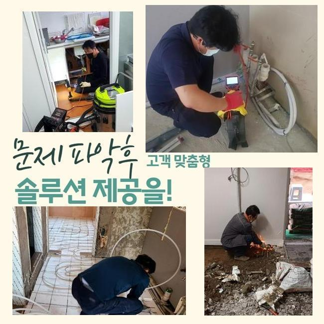
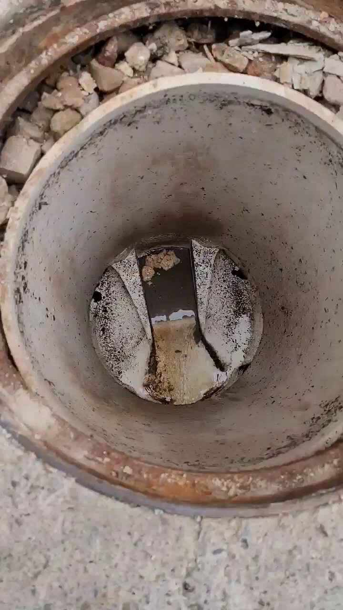
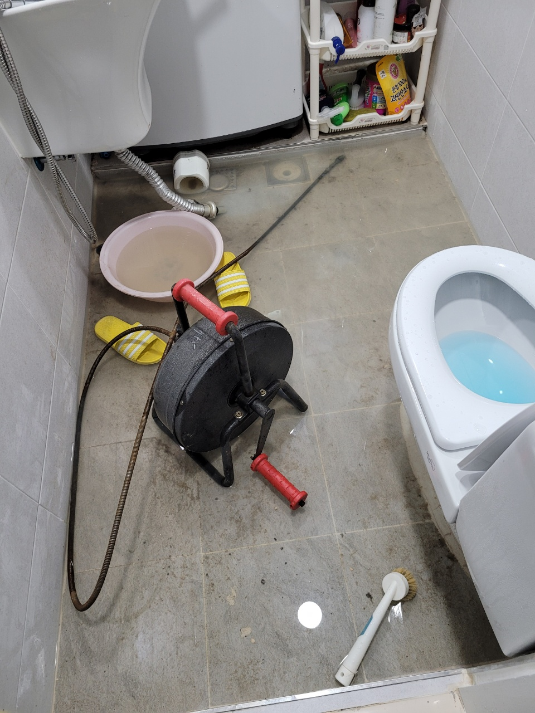
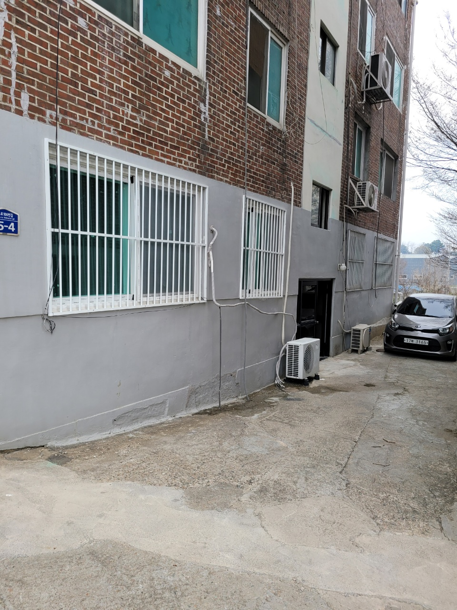
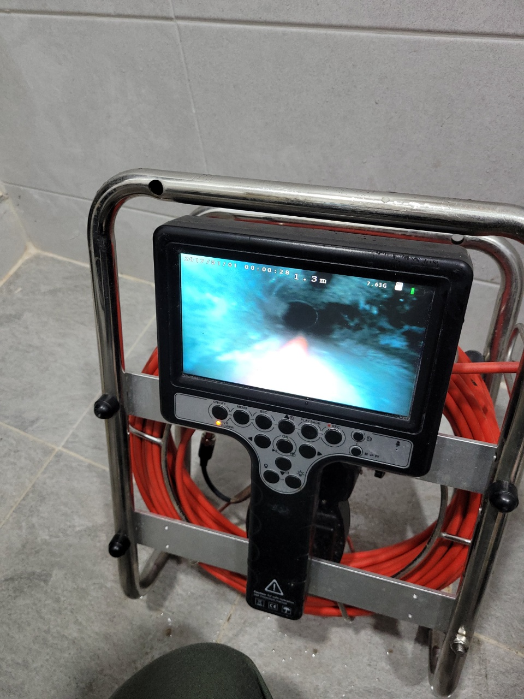
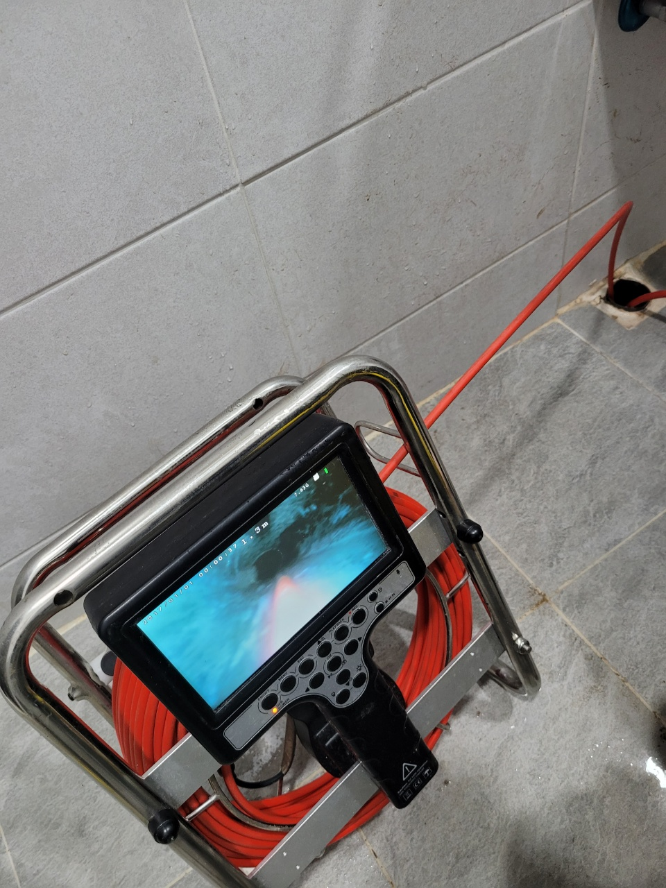

🏠 용인 신봉동화장실하수구뚫음 고기동 맨홀막힘 설비하는곳
용인 신봉동 하수구막힘 전문 시공 후기

📋 작업 개요
- 위치: 용인 신봉동, 신봉동, 용인
- 서비스 유형: 하수구막힘, 배관막힘, 맨홀막힘, 누수수리, 뚫는업체
- 작업 일시: 2025. 2. 24. 12:33
- 업체명: 하수구수사대 (010-5615-2118)
🔍 문제 상황
수지 고기리 하수구 막힘 뚫음 신봉동 동천동 하수구 업체
우리는 하루에도 몇 번이고
물을 사용하고 있습니다.
그중에서도
가장 많이 이용하는 곳은
화장실이 아닐까 싶어요.
볼일을 보고, 샤워를 하는 등
다양한 용도로
물을 사용하고 흘려보냅니다.
그렇다면 이렇게 사용한 오수는
어디로 흘러가게 될까요?
바로 바닥에 자리하고 있는
배관을 타고 오수를
처리하는 곳으로 흘러갑니다.
다만 여기서 사용되는 배관은
생각보다 관의 두께가
그리 넓은 편은 아니기에
종종 막혀버리는 경우도 있습니다.
의도치 않은 큰 이물질이
들어간 상태라거나
혹은 오랫동안 사용하며
꾸준하게 이물질들이
쌓인 경우가 대부분입니다.
이번에 요청을 주셨던
수지 고기리 하수구 막힘 뚫음

🔎 원인 분석
💡 전문가 진단: 하수구수사대최신장비보유!1년as 보장!주말,공휴일도 ok!010-2340-2118
신봉동 동천동 하수구 업체
고객님도 갑작스레 배관이 막혀
물이 내려가지 않는다며
연락을 주셨습니다.
언제 어디서나
깔끔하게 해결하는
슬기로운 하수구 생활은
요청을 듣고 곧바로
현장으로 달려갔습니다.
도착하자마자 저희가 진행한 것은
바로 막혀 있던 내부를
확인하는 작업이었습니다.
요청을 넣어 주셨던
이번 현장의 경우에는
배관이 외부와 연결되어 있어
바깥에서도 확인이
가능한 상황이었어요.
사진과 영상에서 보이시는 것처럼
물이 관 내부에 쌓인 채
내려가지 않는 모습이
들어오고 있습니다.
평소에는 잘 내려가기만 하던
물이 갑자기 흘러가지 않는다면
사용해야 할 물을
사용할 수 없게 되었기에
여러모로 불편할 수밖에 없습니다.

🔧 작업 과정
특히 용인 하수구 막힘 뚫음
작업을 시행하기까지
화장실을 사용하지 못한다는 것은
생각보다 큰 불편함으로
다가올 수밖에 없으시죠.
따라서 이러한 문제가 발생했다면
재빨리 원인을 파악하고
그에 따른 적절한 해결 방안을
도출한 후 곧바로
작업이 가능한 전문적인 업체를
불러 주시는 것이 좋습니다.
어떠한 현장이라고 해도
문제없이 해결이 가능하도록
용인 하수구 설비를 들고 다니면서
깔끔하게 시공해 드리고 있습니다.
무엇보다도 배관은 우리의 생각보다
훨씬 예민합니다.
그렇기에 작업을 하던 도중
실수로 관 내부에 스크래치 등의
상처를 내기라도 한다면
후에 누수가 발생하여 더욱
큰 불편함을 겪게 됩니다.
따라서 이런 점들을
명확하게 파악하여
제대로 해결해 줄 수 있는
전문적인 업체를 부르는 걸
권장하는 것인데요.
이번 요청 역시
장비를 동원하여 막혀 있던 부분을
확인하고 확실하게 뚫어 주는
시공을 진행했답니다.
무사히 뚫린 것인지
시원하게 내려가는
모습이 영상으로도 보이는데요.
요청은 모든 작업이 끝난 후에도
지속적으로 물을 흘려보내면서
막히지는 않는 것인지
꼼꼼하게 확인하며
마무리 작업에 들어갑니다.
결과물을 보시던 고객님께서는
무척 만족스러워하셨어요.


✅ 작업 완료
오늘 보셨던 시공과 마찬가지로
갑작스레 배관이 막혀
불편함을 느끼고 있다면
언제든지 슬기로운 하수구 생활에
연락 주시기를 기다리고 있겠습니다.
하수구수사대
최신장비보유!
1년as 보장!
주말,공휴일도 ok!
010-2340-2118
경기도 용인시 수지구 풍덕천로129번길 9 5층 590호




⚠️ 베란다 누수 및 방수 관리 방법
- ✅ 비가 많이 올 때 창틀 주변이나 아래층 천장에 얼룩이 생기는지 정기적으로 확인해 보세요.
- ✅ 우수관 주변 실리콘 마감이 들뜨거나 깨진 틈새가 있는지 손상 여부를 수시로 체크하세요.
- ✅ 베란다 바닥 타일의 줄눈(메지)이 소실되면 그 틈으로 물이 침투하여 누수가 유발됩니다.
- ✅ 누수 의심 증상 발견 시 방치하면 아래층 손실이 커지므로 즉시 전문가의 진단을 받으십시오.
💡 핵심 정리
- 확실한 장비 작업(내시경 점검 및 샤프트 스케일링)으로 원인을 뿌리 뽑습니다.
- 작업 후 1년 이내에 동일한 부위 재발 시 100% 무상 A/S 서비스를 보장합니다.
- 서울 · 경기 · 인천 전 지역에 24시간 언제든 긴급 출동할 수 있도록 항시 대기 중입니다.
❓ 자주 묻는 질문 (FAQ)
🚨 용인 신봉동 하수구막힘 문제로 고민이신가요?
정확한 원인 진단과 확실한 시공으로 재발 없는 해결을 약속드립니다.
24시간 긴급 출동 | 서울 · 경기 · 인천 전지역 | 1년 내 재발 시 무상 A/S